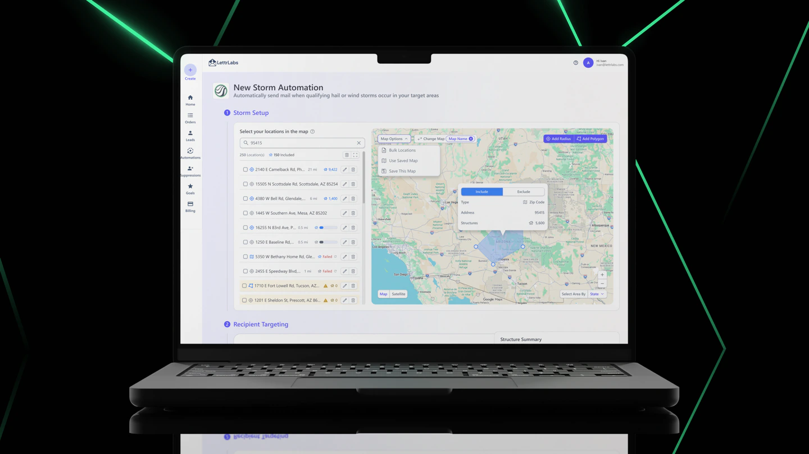

Audience Map Builder
Turning a scattered set of map bug-fixes into one audience model with five entry points.
- My role
- Led the audience-builder design end-to-end. Another designer owned the automation around it
- Timeline
- 6 weeks, from audit to shipped redesign
- Process
- AI-assisted prototype, built in Codex
- Status
- Phase one shipped, later phases defined
The problem
One way in, and it didn’t fit everyone
An old audience builder buried in the automation flow. Open the map, draw a shape. If you thought in ZIP codes, already had a CSV, or wanted last month’s area again, there was no way in for you, so people called Customer Success or filed a ticket.
My part
I changed the brief
From “fix the map” to “help people build an audience”
That shift told me what belonged in the experience and what stayed secondary. The map became one way in, not the only way.
One audience, five entry points
Search or region selection, CSV upload, saved areas, radius, and polygon all land in the same audience, so people can look at total reach and cost instead of the tool they used to get there.
Ready for build
I evaluated 4 map providers and specified the interaction model across ~55 states spanning 13 flows, with entry methods, calculation states, and failure cases written out for QA.
Working with others
Each side wanted a different thing from the same release
So I put the views next to each other rather than arguing them one at a time.
PM
Wanted the ticket backlog cleared without slipping the automation release.
Revenue risk
~75% of revenue rides on three enterprise accounts, all on this one surface. A regression here is a revenue event, so the phased path mattered more than the elegant one.
One model to build against
Needed one interaction model, not five special cases.
Discovery
What the audit actually said
The loudest signal wasn’t that the UI looked old. It was that the product kept saying “not yet” and never showed customers a way forward.
| Source | Evidence |
|---|---|
| Active users | ~1,500 automation users |
| Product research | ~20 interviews gathered by PM and CS, then sorted into recurring patterns and personas |
| Behavioral data (Hotjar) | Heatmaps, drop-offs, and rage clicks, each tied back to a specific broken action, validation, or edge case |
Process
Four mental models, one workflow
None of these personas needed a different product. They needed one audience-building workflow that could bend to how they already thought about the task.
Start from data
At home with audience controls and refinement logic. They start from CSV upload, include / exclude rules, and filtering, so import has to be fast and complex edits have to hold up.
Start from geography
They already know the geography they want: a ZIP, city, county, or state. Geographic selection has to work directly, instead of making drawing tools the default.
Start from last time
They come back to a workflow they have set up before, from saved reusable locations, so reuse has to be quick and carry over from earlier campaigns.
Start from the map
They still need the map to get their bearings. They start map-first, so the product needs clear entry actions and feedback that teaches the workflow as they go.
The work
The shipped audience builder
Phase one shipped the map-first workflow and the core targeting controls, on the surface behind ~95% of automations.
I defined the full five-entry-point model up front for phased delivery, so later releases could add CSV upload, saved areas, and exclusions without reopening the interaction model.

The rejected idea
Task-first entry
My strongest rejected idea was a task-first entry, where you pick the map, a CSV, or saved locations up front.
It would have helped people who arrive with a clear job in mind. But other customers need the map first to get oriented and trust the flow, and those customers are on the surface carrying the revenue.
I’d A/B it against the shipped map-first flow, one persona at a time.

Outcome
De-risked a revenue-critical path
Phase one shipped on the surface behind ~95% of automations, the same one serving the three enterprise accounts that carry ~75% of revenue.
“None of these personas needed a different product. They needed one audience-building workflow that could bend to how they already thought about the task.”Persona summary
Where it goes next
Audience creation outside automation
Build an audience once, save it, and reuse it across automations. It didn’t fit the first release, but it’s the better architecture, because it narrows the on-screen job to one thing.
Read the full case study
The complete write-up, with the sections a deck has to leave out.
Next deck: Integration Framework
Carry on to the next case study, or head back to all four.
Use ← and → to move through the deck